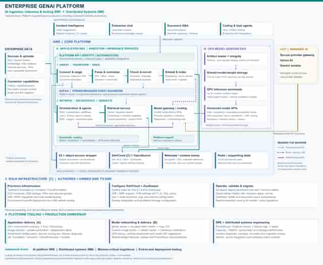

THE PROBLEM
Enterprise GenAI platform
Enterprise teams needed a shared platform for document Q&A, enterprise chat, incident intelligence and coding-agent workflows. These experiences depended on more than a model endpoint: documents had to be ingested, transformed and indexed; retrieval had to remain responsive; and model deployments needed repeatable artifact and runtime configuration. Different workloads also placed different demands on CPU, storage and GPU capacity.
What I owned
I owned Kubernetes, vector databases, platform operations and GPU-serving infrastructure within an internally engineered enterprise AI platform. I shipped model-weight onboarding, deployment and Solr lifecycle tooling, connecting ingestion, retrieval and model serving with production reliability.
- Shipped and owned GPU model onboarding: Helm/Argo CD, custom vLLM images, weight staging and checksums, tensor parallelism, memory budgets and LoRA configuration.
- Authored and owned end-to-end Solr IaC and lifecycle tooling; owned operations across vector databases, Redis, MongoDB, Elasticsearch and Kafka.
- Productionized 10+ ingestion and inference microservices across Dev/UAT/Prod; owned Kubernetes operations, upgrades, routing, autoscaling and capacity planning.
- Owned observability from metrics and logs to dashboards and alerts, operational automation and recovery workflows; helped turn recurring failures into lasting fixes.
MODEL SERVING & TOOLING
Shipped vLLM deployment tooling and model-weight onboarding.
DATA & PERFORMANCE
Owned vector stores, database operations and retrieval performance.
PLATFORM RELIABILITY
Owned Kubernetes, IaC, observability, capacity and recovery.
SYSTEM DESIGN
Follow the architecture.
- 01
Ingest enterprise knowledge
Connectors and upload services stage source objects through an S3-backed access layer. Parsing, chunking and embedding services turn content into retrievable representations.
- 02
Retrieve and orchestrate
Search/vector services access Solr and OpenSearch indexes. Orchestration and agent services assemble context and invoke models through a routing layer. Kafka supports platform events and configuration dependencies.
- 03
Serve models across two paths
Self-hosted models run on a separate GPU EKS environment; a provider gateway reaches Vertex AI/Gemini. The model tooling stages weights to FSx for Lustre, validates checksums and mounts weights read-only for serving.
- 04
Own the distributed foundation
SolrCloud runs on EC2/EBS with ZooKeeper. Ansible-driven CloudFormation, Terraform foundations and Python utilities support provisioning, runtime configuration and lifecycle operations.
ENGINEERING JUDGMENT
The decisions behind the boxes.
Separate application and model infrastructure
The architecture separates the ingestion/inference services from GPU model hosting. This lets application and model deployments have distinct capacity and runtime configurations.
Make model artifacts part of deployment
Weight staging, integrity checks, shared volumes, health probes and runtime values are first-class deployment steps. Configuration covers precision, context limits, memory budgets, tensor parallelism and LoRA serving.
Treat retrieval as a systems problem
I worked across JVM/GC, OS settings, cache behavior, query patterns and indexes. The reported latency improvement is a vector-query result, not an LLM generation benchmark.
DELIVERY & OPERATIONS
What changed.
- Expanded and automated infrastructure from approximately 10 to 250+ nodes, supporting about 200 TB of vector indices across Solr, Milvus and OpenSearch.
- Reduced vector-query latency from approximately 7.0 seconds to 1.9 seconds through workload-specific tuning.
- Architected a 200-node Solr migration to Graviton/ARM64, preserving query throughput and approximately 3,200 vCPU / 12.8 TB RAM capacity while reducing cost 19.8% ($266K+ annualized).
- Helped reduce production incidents from approximately 20 per day to 2 per week through shared reliability work, observability and recurring-failure remediation.
- Delivered $500K+ in combined Solr and Mac infrastructure savings. Component rates reported separately: $266K+ annualized from Solr and approximately $16K/month from EC2 Mac document conversion, productionized with application developers. The combined figure is not stated as an annual total.
The operating story
The operating model combined application GitOps with model deployment automation and dedicated search lifecycle tools. Solr utilities supported availability-zone-aware replica placement, old/new-node replica transitions, serial restarts with recovery checks, and document-count comparisons. These are concrete controls I can explain during a migration or reliability interview.
ORIGINAL DIAGRAMS
A glimpse of the original diagrams.

LOW-RESOLUTION PORTFOLIO PREVIEWEnterprise GenAI platform
The supplied portfolio architecture PDF, including Solr ownership. This is the recent reconstructed overview, not a historical production drawing.
LET’S GO DEEPER
Good starting points for a conversation.
- How did you diagnose the 7-second retrieval path?
- How did you stage and validate model weights?
- How did you plan replica transitions for the ARM migration?
Scope and attribution. Sanitized logical composite of production configuration families and my account of the platform. It is not a live cluster inventory. Results are reported career outcomes; no LLM throughput, TTFT or GPU-utilization improvement is claimed. Solr authorship does not imply sole authorship of the broader platform or upstream components.
Next case studyCyber telemetry & distributed ingestion →